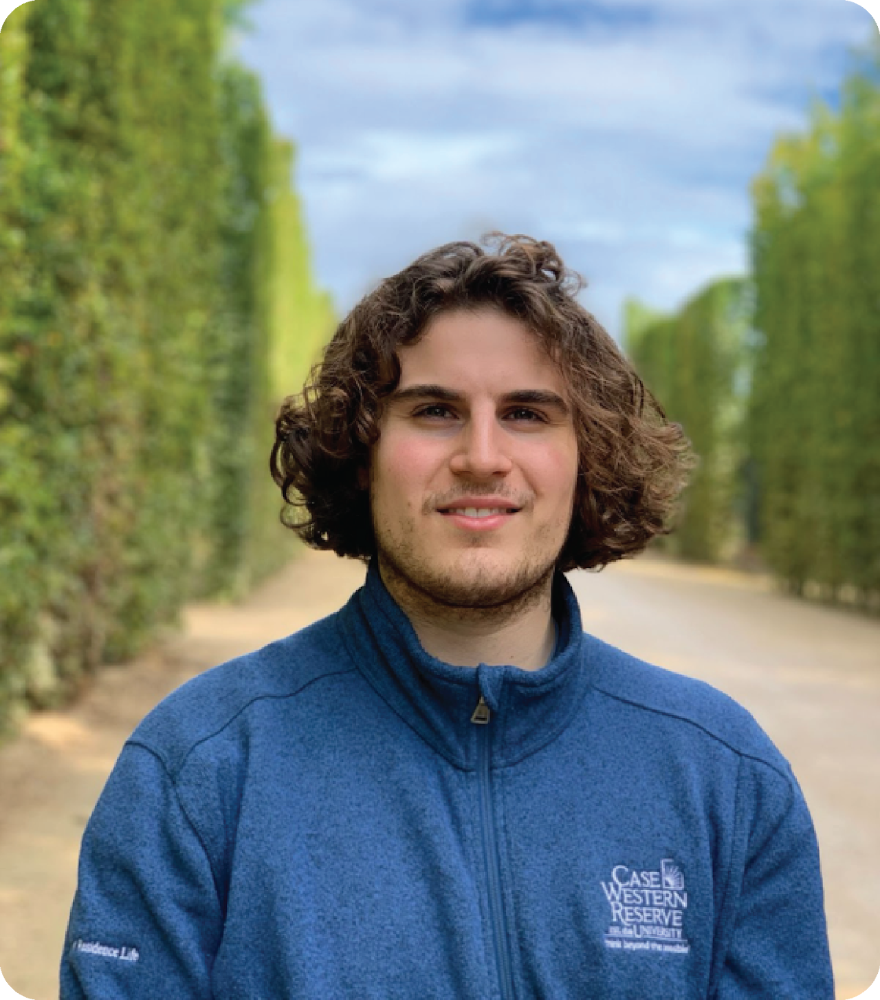

Latest update ·
New device design could miniaturize photonics, quantum technologies
Our work combines engineered quantum wells and metasurfaces for enhanced nonlinear frequency conversion.
Read the Harvard SEAS story ↗During my Ph.D. with Prof. Federico Capasso, I worked on active photonics platforms that bring semiconductor lasers and passive integrated photonics together on a chip. By combining optical gain with passive circuitry, we can generate, route, and shape light within the same platform. Our lasers of choice are mid-infrared quantum cascade lasers (QCLs), which operate where many molecules have strong absorption fingerprints, making these chips attractive for sensing applications. As a postdoctoral fellow, I am extending this approach to other gain systems, including rare-earth-doped integrated photonics, in collaboration with Prof. Kiyoul Yang.
My professional interests span fundamental photonics research and the development of technologies that can make an impact beyond the lab. I am especially interested in turning new ideas into practical systems for sensing, communications, and other real-world applications.
During graduate school, I was lucky enough to be awarded both the Department of Defense NDSEG Fellowship and the NSF Graduate Research Fellowship.

Latest update ·
Our work combines engineered quantum wells and metasurfaces for enhanced nonlinear frequency conversion.
Read the Harvard SEAS story ↗More research news
Our work on controllable frequency combs in Optica was featured by Harvard SEAS.
Read the Harvard press release ↗November 17, 2025
I defended my Ph.D. thesis. Special thanks to my committee: Federico Capasso, James Fujimoto, and Jelena Notaros.

April 16, 2025
Our new Nature paper demonstrated on-chip pulse generation from a quantum cascade laser.
Read the Harvard featureJanuary 31, 2025
Our recent work on coupled semiconductor ring lasers was highlighted alongside the editor's choice paper.
Read the article